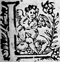

LE
TROISIESME
LIVRE DE LA
SECONDE PARTIE
D'ASTREE.
Édition de 1610, p. 123.
Édition de Vaganay, p. 83.

LORS que Silvandre s'endormit, la nuict estoit desja tant avancee, qu'il ne s'esveilla que le Soleil ne fust fort haut : Et au contraire, le Berger, qui la nuict avoit discouru avec le Druide, fut aussi matineux que l'Aurore : Et par ce que le lieu de sa demeure estoit pres de là, de fortune se promenant selon sa coustume, il apperceut Silvandre endormy, et desireux de le cognoistre, (η parce que depuis plus d'un mois qu'il faisoit sejour en ce lieu, il n'y avoit rencontré Berger de sa cognoissanceη , il s'approchaaprocha doucement de luy, mais il n'eust plustost jetté l'œil dessus qu'il le recogneutrecogneust pour l'un de ses plus grands amis, et telle cognoissance luy fist venir les larmes aux yeux pour le souvenir de sa vie passee :
et se retirant quelques pas en arriere, et se couvrant d'un gros arbre pour n'estre apperceu de luy, si de bonne fortune il s'esveilloit, il le considera quelque temps fort attentivement, et dit en fin d'une voix assez basse : - Tres-cher amy, et tres-fidelle compagnon Silvandre, que ta rencontre m'apporte de plaisir et d'ennuy ! car nostre amitié ne veut pas que la tristesse ou je vis m'empesche de me resjouyr en te voyant : Et toutesfois ceste veuë me remet en la memoire, l'heureuse vie que j'ay passee depuis que j'eus ta cognoissance, jusques à la cruelle sentence que ma Bergere prononça contre moy. Sentence dont je ne me puispuis me souvenir, que plein de regret je n'appelle la mort à mon secours, esprouvant bien veritable ce que l'on dit, qu'il n'y a rien de si miserable que celuy qui perd le bon-heur possedé. Mais qui pourroit sans larmes avoir la memoire de ma felicité passee, et la veuë de ma misere presente ? A ce mot il se teut, et croisant les brasη , se retira encores deux ou trois pas, par ce qu'il le vit remuer, et en mesme temps se tourner d'un costé sus l'autre, disant assez haut : - Ah ! belle Bergere, combien cruellement traicteztraittez vous ce pauvre Berger ? L'Estrangerη cogneut bien qu'il dormoit, mais ne sçachant de quel Bergerη il vouloit parler, il s'approcha de luy, et luy regardant le visage, le vitvid tout couvert de pleurs, qui trouvoient passagespassage sous les paupieres, quoy qu'elles fussent closes. Il jugea lors que c'estoit de luy mesme de qui il entendoit parler, ce qu'il trouva fort estrange, se ressouvenant que sonη humeur avoit tousjours esté si contraire à l'Amour, qu'outre
le surnom d'incogneu, on le nommoit bien souvent le Berger sans affection : mais considerant la force qu'une beauté peut avoir, il creut en fin qu'il n'avoit non plus esté exempt des blessuresblesseures d'Amour que les autres Bergers de son âgeaage . Et se confirma davantaged'avantage en ceste opinion, se ressouvenant de ce qu'on luy avoit dit de la gageureη de luy et de Phylis. Ceste consideration luy fit dire en le regardant : - Ah ! Silvandre, que tu éses à cette heureà ceste heure peu capable de conseiller autruy, puis que tu es aussi necessiteux, à ce que je vois, de bon conseil, que nul autre : pour l'amitié que je te porte, je supplie Amour qu'il te soit plus pitoyable qu'il ne m'a point esté. et qu'il donne à ta fortune un tourη plus heureux qu'à la mienne. A ce mot se reculant doucement, il se retira au lieu de sa demeure : mais il ne se futfust plustost assis sur le bord de son lict, que revenant à penser à la rencontre qu'il avoit faicte il se representa l'amitie que Silvandre luy avoit tousjours portee, la grande familiarite qui avoit esté entr'eux, et comme la fortune le luy avoit amené le premier en ce lieu. - Est-ce point, disoit-il, pour donner commencement à une plus douce vie, et qu'elle soit desormais lasse de me travailler ? : Cela ne peut estre, disoit-il, puis que rien ne me sçauroit rendre moins miserable que je suis, sinon la seule mort, et qu'il y a plus de sortes de peines que de puissance pour les supporter. Seroit-ce point peut estre, que le Ciel prevoyant la fin de mes jours ait conduit vers moy Silvandre l'un de mes plus grands amis, pour en son nom et de tous les autres me venir dire le dernier adieu ? : Ceste pensee
le retint quelque temps, en fin elle fut
cause de le faire resoudre à chose qu'il n'eust jamais
pensé, qui estoit d'escrire à sa Maistresse, parce
que le rigoureux commandement qu'elle luy avoit faitfaict en le bannissant de sa presence, luy en ostoit la
hardiesse, mais pensant asseurement que ses jours
estoient pres de leur fin, il jugea d'estre obligé à
ne partir
point de ceste vie, sans prendre congé d'elle en
quelque sorte. Il prend donc la plume, il escrit et
raye plusieurs fois la mesme chose, approuve ce
qu'auparavant il a desapprouvé, et en fin luy escrit
ce que cent fois il avoit effacé, et apres avoir plié
la lettre, met au-dessus, A la plus belle et plus
aymee Bergere de l'Univers. Et reprenant le chemin par où il estoit venu, retourne
où il avoit laissé Silvandre, et s'approchant
doucement de luy avant que luy mettre ceste lettre
en la main, la baisant deux ou trois fois : - Ha ! trop
heureux papier dit-il, si ton bon-heur te porte entre
les mains de celle de qui depend tout mon contentement,
touche luy si vivement le cœur, que si la
compassion n'y peut trouver place, le souvenir du
passé, et le tesmoignage de la miserable vie que je
fay, la contraignent de croire, qu'encores qu'elle soit
entierement changee envers moy, toutesfois mon
affection ne le sera jamais envers elle. Et toy
Silvandre, dit-il, se tournant vers son amy et la
luy mettant dans la main, si ton Amour te permet
d'avoir encor des yeux pour voir la beauté de celle
à qui ce papier s'addresseadresse , donne le luy, Berger, je
te supplie, et fay ce bon office à ton amy, comme
le dernier qu'il espere jamais recevoir, ny de toy
ny d'autre. Il disoit cela, sur l'opinion qu'il avoit de ne pouvoir longuement continuer sa vie de ceste sorte. Ainsi se partit ce Berger, tant affligé qu'il s'en alla les brasη pliez l'un dans l'autre, et les yeux contre terre, jusques en sa demeure, et tres à proposapropos pour n'estre apperceu de Silvandre, qui s'esveilla en mesme temps. Et parce que le Soleil estoit desja fort haut, il regardoit de quel costé il prendroit son chemin pour s'en retourner, lors que frottant ses yeux, pour en chasser entierement le sommeil, il y porta la main, où le Berger luy avoit mis la lettre. Son estonnement fut grand, lors qu'il la vitvid , mais beaucoup plus, quand il leut à qui elle s'addressoitadressoit . - Dors je, disoit-il, ou si je vueille ? est-ce en songe, ou en effect que je vois cetteceste lettre ? Et lors la considerant, je ne dors point, continuoit-il, il est tout certain que je veille, et que je tiens en la main une lettre qui s'addresse à la plus belle, et plus aymee Bergere de l'Univers. Mais si je ne dors point, pourquoy ne sçay-je qui me l'a donnee ? L'avois-je quand je me suis endormy ? Je ne l'avois point, et faut de necessité que durant mon sommeil quelqu'un me l'ait mise dans la main. Et cela pourroit bien estre, car qui est celuy d'entre tous les Dieux qui n'a point aymé les beautez de la terre ? Amour mesme qui est celuy qui blesse les autres, n'en a pas esté exempt : De sorte qu'il semble qu'ils jugent nos Bergeres plus belles que leurs Deesses. Et pourquoy ne croiray-je pas que quelqu'un des immortels, ou quelque Faune et demy Dieuη ayant veu ceste belle Diane,
n'en soit devenu
amoureux ? Et lors se taisant et rentrant en peu en luy mesme.
- Mais que vay-je recherchant disoit-il, qui luy a
escrit cetteceste lettre ? voyons-lalà : sans doute elle
nous le fera mieux sçavoir que tout autre : Et despliant
le papier, il lal'a leut
du commencement jusqu'jusques à la
fin : et lors qu'il y trouvoit quelque chose semblable,
à ce qu'autrefoisautresfois il avoit pensé : (comme bien souvent
diverses personnes tombent en un mesme sujetsubject , sur
une mesme conception) il y mettoit la pointe du doigt
dessus, et en trouvant une autre, il le marquoit
de mesme, mais quand il leut à la fin de la lettre, le plus infortuné comme le plus fidelle de vos
serviteurs. O ! s'escria-il, il n'en faut plus
douter, c'est moy sans doute qui ay fait cetteceste lettre : et faut par necessité que le demon qui a
soucy de ma vie, ayant leu les pensees de mon ame
les ait escritesescrittes en ce papier, afin de les faire voir
à Diane. Et de faitfaict il n'y a point de beauté qui
puisse causer de si violentes passions que celles
que je lis icy, si ce n'est celle de ma maistresse : et il n'y a point d'Amant qui soit capable de
concevoir tant d'affection, si ce n'est Silvandre :
de sorte qu'il ne faut plus mettre en doute, que cetteceste lettre s'addressantadressant à la plus belle et plus aymeeaimee Bergere de l'univers je ne la doive donner à
Diane : et qu'estant escriteescritte par le plus fidelle et
plus infortuné Amant, ce ne soit par Silvandre,
infortuné ? d'autant qu'il aymeaime la plus belle Bergere
de l'univers, et que cetteceste Bergere s'est rencontree
la moins sensible à l'amour de toutes celles qui
doivent estre aimees. Silvandre s'alloit ainsainsi
η
persuadant que cestecette lettre
s'addressoit
à Diane, et desirant qu'elle vit de qu'elleη sorte il estoit traittétraité , apres avoir remercié son favorable Demon, duquel il pensoit avoir receu ce bon office, il printprit le chemin qui luy sembla le plus court pour retourner en son hameau, avec dessein que si en y allant il ne rencontroit Diane, il se mettroit en queste d'elle aussi tost qu'il auroit disné. Et de faictfait ne l'ayant point trouvee, se despeschant le plus promptement qu'il peut du repas, il sortit son trouppeautroupeau de l'estable qui l'appelloit comme ayant attendu et prit le sentier qui conduisoit à la fontaine des Sicomores, esperant d'apprendre là de ses nouvelles. En quoy il ne fut point deceu : car estant arrivé à l'entree de la grande prairie qui laη touche et estendant la veuë de tous costez, il luy sembla de la voir avec Astree, assise à l'ombre de quelques buissons. Amour le rendit incontinent desireux d'ouyr leurs discours, sans estre apperceu, luy semblant qu'elles estoient fort attentives à leur ouvrageη . Et pour venir à bout de son dessein, se remettant dans leles bois d'ou il sortoit, il alla suivant les arbres jusques prés du lieu où elles estoient si doucement, que sans estre apperceu il pouvoit ouyr tout ce qu'elles disoient, ayant laissé son troupeau un peu derriere dans lesle bois, sous la garde de ses chiens. Et en ce mesme temps Astree parloit de cestecette sorte à Diane : - C'est sans doute que Philis ne merite pas que vous preniez cestecette peine, et moins encores de porter ces beaux cheveux. Et faut que j'advouë que je me sens en quelque sorte touchee de jalousie, quoy que je n'aye
point fait de gageure avec elle, comme Silvandre : car je ne voudrois pas qu'elle ny personne du monde eust meilleure part en vos bonnes graces que moy. - Belle Astree, respondit Diane, c'est moy qui dois desirer de vous la faveur de vostre amitié, ce que je fay de telle sorte, que je ne cederay jamais à personne en ceste volonté, non pas mesmemesmes à cestecette Philis dont vous parlez, et qui me donneroit bien plus de sujet de jalousie, si je ne cognoissois qu'il est bien raisonnable que mon affection vous soit cogneuëcognuë autant que la sienne, avant que vous m'aymiezaimiez autant que vous l'affectionnez. - Ma sœur, luy repliqua Astree, vos merites surpassent de tant tous les autres, qu'ils ne vous rendent point subjecte pour estre aymee à la loy commune. - Et toutesfois, me respondit Diane, combien m'a t'il fallufalu demeurer aupres de vous, avant que d'avoir obtenu ce bon heur ? - J'advouë, dit Astree, que j'ay esté aveugle de vous avoir veuë, et ne vous avoir particulierement aymeeaimee jusques icy, oùou il faut confesser que nous ne sommes point maistresses de nos volontez, mais quelque plus haute puissance qui en dispose comme il luy plaistplait . Diane en sous-riant et baissant doucement les yeux, luy respondit : - Vos paroles, ma sœur, me feroient rougir, si je n'estois du tout à vous : mais ceste volonté qui me rend telle, me les fait recevoir pour des faveurs, encores que venant de quelque autre je les deusse tenir pour des mocqueries. - Vous offenceriez, ditoffenseriez, dict incontinent Astree, et l'amitié que je vous porte, et celle que vous m'avez promise.
- Elle m'est, adjousta Diane, trop saincte et trop sacree pour l'offenser, et par ainsi je croiray pour vous obeyr et pour mon contentement, que ce sont des loüanges que toutesfois je n'advouëray jamais proceder de verité, mais de l'amitié que vous me portez, qui fait voirη les choses beaucoup plus grandes que veritablement elles ne sont, ainsi que le verre mis devant les yeux. - Si vous ne me voulez tenir, luy respondit Astree, pour personne de peu de jugement, croyez que c'est verité et amitié. - L'une ou l'autre, adjousta Diane, ne peut que η me contenter infiniment : car quant à la verité, je l'estime, et pour vostre amitié je la desire par dessus toute chose. Et à ces mots, ouvrant les bras l'une et l'autre, et se les jettant au col, s'embrasserent et baiserent avec une si entiere affection, que Silvandre qui les voyoit, desira plusieurs fois d'estre Astree, pour recevoir telles faveurs, au nom de qui que ce fust. Apres elles se r'assirentrassirent , et se remettant à l'ouvrage qu'elles avoient laissé, il luy sembla qu'elles le nommoient. Cela fut cause que pour les mieux escouter, il s'approcha davantage d'elles, et passant la veuë entre les fueilles et les branches du buisson, il vit que sa Maistresse faisoit un brasselet de ses cheveux : qu'il recogneutrecognut aysémentaisement , tant pour ce qu'il en avoit ouy dire à Astree, que d'autant qu'il n'y avoit Bergere sur, les rives de Lignon qui les eusteut semblables. Et lors qu'il commençoit d'estre jaloux que quelque autre les portast que luy, luy semblant que sa seule affection les pouvoit meriter, il ouyt qu'Astree
disoit : - Silvandre ne sera pas sans
jalousie quand il verra son ennemyeennemie plus favorisee
que luy. - Je croy, respondit Diane, que ce n'a esté
qu'à cestecette intention qu'elle me les a demandez. - Je
le pense aussi, adjousta Astree : mais vous faittesfaites tort au Berger, et si vous favorisez l'un plus que
l'autre, vous manquez à vostre paroleparolle , ayant promis
le contraire. - Ny leur gageure, repliqua Diane, ny
l'advantage que je fais à Philis ne sont pas de
grande importance, outre que le Berger ne m'en a
point requis. - Et par vostre foy, dit alors Silvandre, se faisant voir à l'impourveuë, s'il vous
en supplie, les luy accorderez-vous ?
Les Bergeres furent toutes surprises l'oyant parler,
et leur estonnement fut tel, qu'elles demeurerent
long temps sans dire mot, et ne faisoient que se
regarder l'une et l'autre, parce qu'elles craignoient
qu'il eust ouy les discours qu'elles avoient tenus
quelque temps auparavant qu'il arrivast.
Enfinη
Astree fut la premiere qui reprenant la
paroleparolle , luy dit : - Et quoy Silvandre, vostre discretion vous a t'elle permis d'escouter les
secrets d'autruy ? Et avez-vous eu si peu de respect
à vostre Maistresse, lors qu'elle ne
vouloit estre
ouyeouïe que de moy ? -
Je ne sçay, respondit Silvandre, de quels secrets
vous m'accusez : mais si fay bien, que la curiosité
qui m'a conduit icy n'a esté que pour ouyr de la
bouche de ma maistresse mes propres secrets : car c'est d'elle et non de moy que je les dois apprendre,
et suis tres marry d'y estre arrivé si tard, puis que
les paroles que j'ay ouyes néne m'ont apris autre chose
que
les nouvelles de ce brasselet dedié, encore
qu'avec injustice, à Philis. - Vous ne devez point,
respondit Astree, estre marry de n'estre arrivé
plustost, puisque vous n'eussiez fait une moindre
offence de desrober ainsi les secrets de vostre
Maistresse, que celuy qui vola le feu du Cielη
: et par
raison vous n'en devriez pas attendre un moindre
chastiment.
- Ceη
ne sera jamais, respondit Silvandre,
la crainte du supplice qui m'empeschera d'avoir ceste
curiosité : car j'estime de sorte le moyen de luy
rendre preuve de mon affection, que toutes sortes de
peines me sont douces pour ce sujetsuject : - Et comment,
luy dit Astree, luy en penseriez-vous rendre
tesmoignage par cestecette voye ? - Je le vous diray, belle
Bergere, respondit Silvandre. Ne seroit-ce pas luy
en rendre un tres-asseuré, si sçachant ce qu'elle
desire estre secret, je le celois, et que par ainsi il ne fust moins secret qu'il estoitétoit ,
avant que je
l'eusse sçeu, puis qu'au siecle où nous sommes, l'on
ne dit pas seulement toutetout ce que l'on sçait, mais
aussi tout ce qu'on s'est imaginé ? - En cela,
respondit Astree, vous feriez paroistre une grande discretion. - Mais plus encores, dit-il, une grande
affection. - Pour la discretion adjousta Astree,
je l'advoüeavouë : mais pour l'affection, je m'en remets à
celle à qui elle s'addresseadresse . - Aussi repliqua le
Berger, le dis-je pour elle : Et voudrois, puis qu'il
a fallu que Silvandre
autresfois toutesfoisη
tant ennemy de
l'Amour, ayme et adore maintenant quelque chose, que
pour le moins son amour fut recognuë.
Et lors s'addressant à la belle Diane il continua :
- Mais d'où vient, ma
belle Maistresse, que vous ne
respondez rien à ce que je dis, et qu'il semble que
mes discours ne vous touchent point ? - Je croy,
respondit Diane, que c'est le desplaisir que je ressens
desja de ne devoir plus estre vostre Maistresse que
douzeη
ou quinze jours. - Si ceste douleur, dictdit le
Berger, procede de ceste playe, vous y pouvez aysementaisement remedier, obligeant autant Silvandre par vos
faveurs à continuer le service qu'il vous rend, que
veritablement vos beautez et vos perfections m'y ont
contraint jusques icy. - Ah ! Silvandre, respondit Diane, ne parlons plus de faveurs ny de service : le
termeη
des trois mois de vostre feinte estant passé.
Ce vous seroit trop de peine de forcer plus long temps
vostre naturel.
- Belleη
Bergere, respondit Silvandre,
n'en faictesfaites point de difficulté pour la consideration
de ma peine : car ce m'est tant de plaisir, de faire
service à une personne si pleine de merite, que quand
mon naturel seroit encores beaucoup plus contraire
à l'Amour, si ne laisserois-je de le continuer avec
contentement. - Quand cela seroit, dit Diane en
sous-riant, vous n'auriez accordé qu'avec une des
parties : car encores que vostre naturel y consentistconsentit ,
vous ne devez jamais esperer que je m'y accorde pour
l'interest que j'y ay. Ces paroles toucherent de sorte au cœur de Silvandre,
cognoissant combien il y avoit peu gaigne sur sa
volonté, que ne pouvant cacher le desplaisir qu'il
en ressentoit, son visage par un changement de couleur
le descouvrit. De quoy Astree s'appercevant : - Vous
est il, luy dit-elle, survenu quelque defaillance de
cœur ?
- Il est bien mal-ayséaisé , repliqua le Berger, que ces cruelles paroles de ma Maistresse ne m'affligent : mais ne croyez pourtant que le cœur jamais me defaille, quoy qu'elle et le Ciel puissent ordonner de mon contentement, et de ma vie. - N'est-ce point, respondit Astree, temerité plustost que courage qui vous fait deffier deux telles puissances ? - Ce n'est, repliqua le Berger, ny temerité η ny courage, mais une tres-veritable et tres-fidelle amour qui me fait parler de ceste sorte. Tels estoient leurs discours, par lesquels Diane cognoissoit que veritablement elle estoit aymeeaimee . Silvandre prevoyoit beaucoup de peine et peu d'esperance, et Astree jugeoit qu'Amour jettoit en leur ame les fondemens d'une tres-belle et tres longue amitiéη . Et quoy que tous trois eussent diverses pensees, si furent elles toutesfois veritables, comme nous dironsη cy apres. Mais interrompant la suittesuite de ces discours, et s'addressantadressant à Diane : - J'ay sçeu, dit Silvandre, belle maistresse, que le brasselet que vous faites de vos cheveux a esté promis à Philis pour vous racheterrachetter de son importunité. Si cela est, vous estes obligee de favoriser Silvandre autant comme elle, et afin que l'on ne vous croyecroie point estre partiale, vous nous devez traitter esgalementegalement (si η toutesfois l'affection que vous faictesfaites naistre en mon ame peut recevoir esgalité de quelque autre.) - Et pourquoy non ? respondit Astree, prenant la cause de Philis contre luy, si toutes deux procedent d'une mesme cause ? Les mesmes grains produisent bien de differensdifferents espicsespisη η , et pourquoy, luy dit-il, ne voulez vous advoüeravoüer qu'encores
que la cause de nostre affection soit
semblable, toutesfois les effectseffets en puissent estre
differentsdifferens ? - L'experience, repliqua Astree, me
l'apprend : car celle de Philis a obtenu ce qui sera
refusé à la vostre. - Cela, respondit le Berger,
n'est pas deffautdefaut d'Amour mais de fortune : et
toutesfois puisque la goutte d'eau tombant plusieurs
fois sur le rocher, le cave par succession de temps,
pourquoy ne dois-je esperer que mon Amour et mes
prieres longuement continuees pourront bien autant
sur la dureté de ceste Belle ? Et lors se jettant à genoux devant elle, apres l'avoir
quelque temps consideree, ou plustost adoree :
- Siη
l'Amour, luy dit-il, belle maistresse, a quelque
intelligence avec la beauté, et si les prieresη
,
qu'on dit estre filles de Jupiter, luy font tomber
les foudres de la main, seroit-il possible que
l'extreme affection de Silvandre, et les tres-ardentes
supplications qu'il vous fait ne puissent obtenir
de la part d'Amour envers vostre beauté, et de la part
du grand Dieu envers vostre ame, autant de faveur
que la foible amitié et l'importunité de Philis ont
desja obtenu de vous : Si cela est, avec raison je
diray que pour estre ayméaimé , il ne faut point aymeraimer ,
ny pour vaincre la duretédurté d'une ame user de prieres,
mais seulement feindre et importuner.
η
Silvandre adjousta plusieurs autres semblables
paroles, par lesquelles ces Bergeres s'alloient
tousjours davantage asseurant de l'Amour qui prenoit
naissancenayssance en luy : Et Astree qui recognoissoitreconnoissoit que
la volonté de Diane n'estoit point trop esloignee d'accorder à Silvandre
ce qu'il demandoit, se les voulut obliger tous deux par un mesme office : et ainsi adjoustant ses prieres à celles de Silvandre, elle fit en sorte que le brasselet dedié à Philis, fut donné au Berger, avec promesse toutesfois qu'il ne le garderoit que jusques à la fin du terme qu'il la devoit servir, qu'elle pensoit devoir finir dans peu de joursη . A quoy apres quelque difficulté le Berger s'accorda, se ressouvenant que le terme quiqu'il η la devoit servir par feintefainte , se paracheveroit bientost, mais que celuy qu'il la devoit servir à bon escient, dureroit autant que celuy de sa vie. Il seroit mal-aisémalaysé de raconterη les remerciemens de Silvandre : mais plus encores le contentement qu'il en ressentit, et suffira de dire que luy-mesme qui autresfois avoit tant mesprisé les faveurs d'Amour, et qui ne se pouvoitpouvoit se figurer qu'en semblables folies (car telles les souloit-il nommer) on peustpeut trouver quelque sorte de contentement, advoüaavoüa en cette occasion qu'il n'y avoit point de felicité esgale à celle que cette faveur luy faisoit ressentir. Et lors que par des paroles confuses en sa joye, il l'alloit representant le mieux qu'il luy estoit possible, il sembla qu'amour la luy voulust rendre plus entiere, faisant arriver la Bergere Philis : Car si celuy ne se peut dire heureux de qui le bon-heur n'est cogneuη de personne, il s'ensuit que plus l'heur que l'on possede est cogneu, l'on est aussi plus heureux, et encore plus lors que ce bien ne procede pas de la fortune, mais du merite. Aussitost que Silvandre la vit, il courut vers elle, et luy monstrant le bras où il avoit desja fait attacher
le bien-heureux brasseletbracelet , le luy passoit devant les yeux, et luy demandoit ; - Quelles arreserres sont celles cy de ma prochaine victoire ? Philis qui venoit de chercher Licidas pour le desir qu'elle avoit de le sortir de sa jalousie, et qui ne l'avoit sçeu trouver, s'en revenoit si triste et si lasseelassé qu'il ne luy fut pas mal-aysémalaisé de contre-faire la courroucee, ny necessaire de changer de visage, pour tesmoigner le desplaisir que cette faveur luy rapportoit. Et par ce que le Berger l'importunoit fort, non pas en cette action comme elle feignoitfaignoit : mais d'autant que c'estoit de luy de qui Licidas estoit jaloux, elle luy dictdit , le plus rudement qu'elle peut : - Les arres que vous montrez, le sont plustost de vostre peu de merite, que de vostre prochaine victoire, et c'est ainsi que pour rendre les charges justes, on a de coustume de faire. - Et comment l'entendez-vous, respondit le Berger ? - Je veux dire, repliqua-t'elle, que du costé qui est trop leger on met quelque chose de pesant pour contre-ballancer l'autre, jusques à ce que le voyage soit finy, mais estant arrivez l'on le descharge, et la ballebale demeure tousjours de son poix. Aussi jusques à ce que nous ayons achevé nostre terme, Diane va sagement par ses faveurs appesantissantapesantissant le costé qui est le plus leger, mais apres elle jugera sans avoir esgardégard à la pesanteur de mon affection : et à la legereté de vostre peu de merite, et lors Dieu sçait à qui sera cette prochaine victoire dont vous parlez. Silvandre en sous-riant, luy respondit : - C'est bien mieux la coustume des miserables d'estre
envieux, et d'amoindrir par leurs
paroles le bien d'autruy, qu'ils estiment infiniment.
η
Philis sans repliquer passa outre, et vint vers les
deux Bergeres, ausquelles elle usa d'abord de tant
de reproches, qu'il sembloit qu'elles luy eussent
faictfait
une tres-grande offence. Et parce que Diane rejettoit le tout dessus Astree, et qu'Astree ne
s'en pouvoit
bien excuser, Silvandre prenant la parole pour
toutes deux et s'addressantadressant à Diane, luy dictdit :
- Considerez, ma Maistresse, comme Amour est prudent,
et avec combien de sagesse il conduit les actions
de ceux qu'il luy plaist. Vous avez creu jusques
icy que Philis vous aymoitaimoit , et je ne sçay qui n'y
eust esté en quelque sorte deçeu par ses feintesfaintes .
η
Amour qui recognoist l'interieur des ames, afinà fin de vous destromper, a esté cause que vous m'avez
favorisé de sesη
cheveux, non pas seulement pour
marque de mon affection, mais encore pour faire
descouvrir à cette trompeuse, la faulsetéfausseté de la
sienne par sa jalousie : car s'il est impossible
que deux contraires soient en mesme temps en mesme
lieu, il l' est encores plus que l'Amour et la
jalousie soient en un mesme cœurη
.
Ce qui faisoit tenir ces propos à Silvandre, c'estoit
pour tourmenter d'avantagedavantage
Philis : parce que
sçachant la jalousie de Licidas, il ne faisoit nul
doute qu'il ne la mist fort en peine, en luy proposant
que l'Amour ne pouvoit estre avec la jalousie. Aussi
elle qui se sentoit toucher si vivement, ne peutpeust s'empescher de luy respondre : - Quelle raison, Berger,
avez-vous pour soustenir, une si mauvaise opinion ? - Celle, dit-il, qui vous la devroit faire advoüeravoüer, si vous aviez pour le moins quelque cognoissanceconnoissance de la raison. L'Amour n'est-ce pas un desir, et tout desir n'est-il pas de feu, et la jalousie n'est-ce pas une crainte, et toute crainte n'est-elle pas de glace ? Et comment voulez vous que cet enfant gelé soit né d'un Pere si ardentardant ? - Des caillouxcaillous , respondit Philis, qui sont froids on en voit bien sortir des estincelles qui sont chaudes. - Il est vray, repliqua Silvandre, mais jamais du feu ne proceda le froid. - Et toutesfois, reprint Philis : du feu mesme procede bien la cendre qui est froide. - Ouy, adjoustaajouta le Berger, mais quand la cendre est froide le feu n'y est plus. A cette replique Philis demeura troublée, et plus encores quand Diane prenant la parole : - De mesme, dit-elle, quand la froide jalousieη naist, il faut que l'Amour meure. - Ma Maistresse, repliqua Philis, je ne doute point que mon ennemy n'ait la victoire ayant un si bon second que vous estes. Et se tournant vers Astrée : - Et vous belle Bergere, continua-t'elle, vous ne pouvez éviter le blasme de mauvaise amie, si me voyant attaquée par eux deux vous ne prenez ma deffence ? Astrée luy respondit froidement : - Je tiens pour chose si veritable que la jalousie procede de l'Amour, que pour ne mettre cette opinion en doute je n'en veux point disputer, de peur d'estre contrainte (si les repliques me defaillent) d'advoüeravouër qu'estant jalouse je n'ay point aymé, comme je vous voy forcée de confesser qu'estant jalouse de Diane,
vous ne l'aymez point, ou pour le moins qu'estant en doute, si la jalousie procede de l'amour, vous n'estes pas bien asseurée si vous aymezaimez Diane. - Que je baise les mains, dit Silvandre, de cette belle, et veritable Bergere : puis que sans esgard de personne elle a parlé à mon advantage, avec tant de verité. Astrée respondit : - Si vous m'estiez obligé ce seroit un tesmoignage que pour vous favoriser, j'aurois deguisé la verité, puis que l'on n'est point obligé à celuy qui dit vray, non plus qu'à celuy qui nous paye une dette à laquelle il est tenu. - Vous auriez raison, respondit Silvandre, si l'on prenoit toutes choses à la rigueur : mais puis que au siecle où nous sommes, il y a si peu de personnes qui simplement suivent la vertu, il faut advoüeravouër que nous sommes obligez à ceux de qui nous ressentons les bien-faictsfaits , encores qu'ils y soient tenus. - Mais que direz-vous, interrompit Philis, au contraire de l'experience que nous faisons tous les jours ? Je cognoisconnois un Berger, qui ayant longuement ayméaimé , est en fin tombé en une jalousie, qui luy ayant duré quelque temps ne l'a pas empesché de continuer son amitié longuement apres. Oserez-vous dire que c'estoit un feu esteintestaint qui produise cette cendre ? - Il n'est pas impossible, respondit Silvandre, qu'estant sain on devienne malade, et qu'apres la maladie, on retourne en santé, ny qu'un feu soit esteintestaint et puis r'allumé. Et pourquoy une amitié ayant bruslé quelque temps ne se peut-elle esteindre par cette froide jalousie ; et la jalousie perduëη , pourquoy ne deviendra-t'elle aussi ardenteardante qu'elle fut jamais ?
Mais il ne peut estre que la santé et la maladie, que le feu ardentardant et la cendre froide, soient en mesme temps en mesme sujet : Et pour ne perdre tant de paroles pour esclaircir d'avantage cette verité, voyons quels sont les effectseffets de l'Amour et de la jalousie, et nous pourrons juger par eux si les causes dont ils procedent ont quelque conformité ensemble. Quels dirons-nous donc les effectseffets d'Amour ;? un desir extréme qui se produit en nos ames, de voir la personne aymée, de la servir, et de luy plaire autant qu'il nous est possible. Et ceux de la jalousie, quels sont ils ? N'est-ce point une crainte de rencontrer celle qu'on a aymée, une nonchalance de luy plaire, et un mespris de la servir ;? Et qui pourra croire que ces effets si contraires procedent d'une mesme cause ? Si cela est, ne faut-il advoüeravouër que la nature se veut destruire, puis qu'elle faictfait produire à une mesme chose son contraire ? Philis vouloit respondre, mais elle alloit begayant sans sçavoir par où commencer : de quoy Diane ne se pouvoit empescher de rire, ayant desja pris garde à la jalousie de Licidas. Et pour la mettre encore plus en peine prit expressément ainsi la parole : - La jalousie est sans doute signe d'amour, tout ainsi que les vieilles ruines sont tesmoignages des anciens bastimensbastiments : estantestans d'autant plus grandes que les edifices en ont esté superbes et beaux. Aussi crois-je qu'une petite Amour ne fut jamais suivie d'une grande jalousie : mais comme nous n'appellons pas ces ruines des bastimentsbastimens , de mesme la jalousie ne peut estre nommée Amour.
Et selon que je puis juger
de mon humeur, si j'aimoisaymois , il ne seroit pas en mon
pouvoir d'estre jalouxη
. - Et que deviendriez-vous
donc, respondit Philis, si celleceluy
η
que vous aymeriezaimeriez
en aymoit unη
autre. - Son ennemyeennemie , respondit Diane,
je veux dire que je lale
η
hayrois : ce n'est pas que je
ne prevoye bien que cet accident me rapporteroit
un extreme desplaisirdéplaisir , mais plus pour avoir esté
trop longuement deceuë, que trop promptement
oubliée. - Et si ce Berger devenoit jaloux de vous,
demanda Philis, qu'en feriez-vous ? - J'en userois
tout ainsi, adjousta Diane, que s'il ne m'aymoitaimoit plus. - Mais si vous desiriez, continua Philis, qu'il
vous aymastaimast encore, quel chemin tiendrieztiendrez -vous ?
- Celuy du precipice, respondit Diane : car je me
jugerois digne de finir miserablement : si j'aymoisaimois une personne que je sçeusse ne m'aymer pas. - Ah !
Diane, dit Philis, que vous parlez librement ! - Et
vous Philis, repliqua Diane, que vous disputez
passionnémentpationnément ! Que si vous avez affaire de quelque
remede pour ce mal, ou prenez celuy que je vous
donne, ou vous armez de patience pour supporter tous
les desplaisirs qui vous en viendront : et soyez
asseuree qu'ils ne seront pas petits.
Ainsi alloient discourant ces belles et sages
Bergeres, avec Silvandre. Et parce qu'Astrée cogneut que si ces propos continuoient d'avantage,
ils pourroient peut-estre amener quelque alteration,
elle les voulut interrompre : et ne le pouvant faire
plus à propos qu'en se levant, elle feignit de se
vouloir promener ; et ainsi, prenant Diane d'une main,
et Philis
de l'autre, elle se leva, disant quellesη avoient demeuré trop longuement en ce lieu, et qu'il seroit bon de se promener, Lors Silvandre voulant aider à sa Maistresse, laissa choir sans y penser la lettre qui luy avoit esté mise la nuict dans la main. Et parce que Philis avoit tousjours l'œil sur luy, elle ne futfust pas plustost à terre qu'elle la releva, sans que le Berger s'en apperçeust, et la portant vers Astree, vouloit la lire, avant que de la luy rendre, mais soudain qu'elle et la triste Bergere jetterent les yeux dessus, il leur sembla de voir de l'escriture de Celadon. Cette representation toucha si vivement Astree, qu'elle fut contrainte, laissant Diane avec Silvandre, et tirant Philis apres elle, de s'asseoir à terre, où Philis s'estant mise à genoux, et luy voyant le visage tout changé : - Qu'est cecy ma sœur, luy dit-elle, et quel est le mal qui vous est si promptement survenu ? - Mon Dieu, ma sœur, respondit Astrée, quel tremblement de genoux m'a surprise ! Et en quel trouble m'a mise la veuë de cette lettre ? N'avez-vous point pris garde, dit-elle, à la façon de cetteceste escriture, et combien les traits en sont semblables à ceux de mon pauvre Celadon ? - Et pour cela, respondit Philis (qui ne desiroit pas que Silvandre se prist gardeprit de ce trouble) faut-il vous estonner de ceste sorte ? c'est peut-estre veritablement une de ses lettres, qui est tombéetumbee entre les mains de Silvandre, et qu'Amour vous veut rendre comme chose qui vous est deue. - Helas ! ma sœur, respondit Astrée, cette nuitnuict mesme il m'a semblé de
le voirη si triste et pasle, que je m'en suis esveillee en sursaut. Elle vouloit continuer, quand Diane et Silvandre survindrent, bien en peine de la voir si tost changee de visage. Mais Philis qui en toute façon vouloit cacher cette surprise au Berger, fit signe à Diane, et puis s'addressantadressant à Silvandre : - Berger, luy dit-elle, Astree voudroit bien pouvoir parler librement à Diane, si Silvandre n'y estoit pas, ou s'il n'estoit pas Berger. - Mon ennemie, respondit-il, nostre haynehaine n'est point si grande qu'elle me face manquer de discretion envers Astree : outre que je sçay bien, qu'il n'est pas raisonnable, que les Bergers oyent tous les secrets des filles. Je me retireray donc dans ce Boccage voisin, attendant que vous m'appelliez : Et à ce mot faisant une grande reverence à Diane, il se retira sous ces arbres qu'il leur avoit montrez : Et pour ne demeurer oisif, prenant son cousteau se mit à decoupperdescouper l'escorce des arbres, cependant que Diane s'approchant d'Astree apritapprit de la bouche de Philis le trouble où l'avoit mise la veuë d'une lettre que Silvandre avoit laissé choir pour la ressemblance qu'elle avoit à l'escriture de Celadon. Et lors la luy monstrant, apres qu'elle l'euteust long temps consideree ; - Ce seroit, dit Diane, une tres bonne nouvelle que celle que Silvandre sans y penser vous auroit donnee, si Celadon avoit escrit cette lettre, car c'est sans doute que cetteceste escriture est nouvellement faictefaite , et qu'il semble qu'elle vient d'estre escrite à l'heure mesme : De sorte que si c'est Celadon, soyez seure qu'il n'est pas mort. Mais voyons ce qu'il y a dedans, peut-estre
y apprendrons-nous davantaged'avantage : Et lors la desployant, elles virent qu'elle estoit telle.
A la plus aymée et plus belle Bergere de
l'univers,
le plus infortuné et plus fidelle
de ses serviteurs
envoye
le salutη
que la fortune
luy denie.

MON extréme affection ne consentira jamais que je
donne le nom de peine et de supplice à ce que vostre
commandement m'a faictfait ressentir, ny ne souffrira jamais, que la plainte sorte de cette bouche, qui n'a
esté destinée que pour vostre loüange. Mais elle me
permettra bien de dire que l'estat où je suis, qu'un
autre trouveroittreuveroit peut-estre insupportable, me
contente, d'autant que je sçay que vous le voulez et
l'ordonnez ainsi. Ne faictesfaites donc point de difficulté
d'estendre plus outre encor, s'il se peut, vos
commandemens, et je continueray en mon obeissance,
afinà fin que si durant ma vie je n'ay peu vous asseurer
de ma fidelité, les champs Elisées pour le moins, et
les ames bienheureuses qui y sont, recognoissent que
je suis le plus fidelle, comme le plus infortuné de
vos serviteurs.
- Ah ma sœur ! interrompit Astrée, que c'est bien
Celadon qui a escrit ces paroles : je le recognois
à la façon d'escrire et de parler : mais y a-t'il
long-temps ? : - Elle n'est point dattée, respondit
Diane, qui la tenoit entre les mains : mais à
l'escriture je jugerois, comme je vous ay dit, qu'elle
est fort fresche : et de faictfait voicy encoreencor de la
poussiere qui tient contre l'ancreη
. - Ma sœur,
adjousta Philis, ce qu'il faudroit sçavoir de
Silvandre, mais avec discretion, c'est le lieu où
il l'a trouvée, ou qui lal'a
luy a
donnée. - Si vous
pouvez, respondit Diane, s'addressantadressant à la triste
Bergere, remettre un peu vostre visage, afinà fin qu'il
n'y cognoisse point de changement, je m'asseure que
nous sçaurons de luy tout ce que nous voudrons. Et
parce qu'il vous seroit difficile de le pouvoir faire
si promptementprontement , je m'en vay seule luy en parler,
et puis vous nous viendrez trouver.
A ce mot elle s'en alla vers Silvandre, qui s'estoit
arresté au premier arbre qu'il avoit trouvé pour y
graver avec la pointe d'un cousteau les chiffres de
sa Maistresse et de luy : mais ayant du temps de
reste, et rencontrant par hazard une pierre assez
tendre au pied de l'arbre, il y grava un quadran
dont l'esguille tremblante tournoit du costé de la
tramontane, avec ce mot. J'EN SUIS TOUCHÉ. Voulant
signifier que tout ainsi que l'esguille du quadran
estant touchée de l'Aimantη
, se tourne tousjours de ce
costé-là, parce que les plus sçavantssçavans ont opinion que
s'il faut dire ainsi l'Element de la Calamite y est ; par cestecette puissance naturelle,
qui faictfait que toute partie recherche de se rejoindre à son tout ; de mesme son cœur atteint des beautez de sa Maistresse, tournoit incessamment toutes ses pensees vers elle. Et pour mieux faire entendre cette conception, il y adjousta ces vers.

L'Esguille du quadran cherche la Tramontane, Touchee avec l'AymantAimant :
Mon cœur aussi touché des beautez de Diane,
La cherche incessamment.
Lors qu'elle l' η aborda il parachevoit d'y graver leurs chiffres : et lale voyant venir s'en alla tout joyeux vers elle, en luy disant : - Quel bon heur est celuy qui vous ameine vers moy, ma belle Maistresse ? - il est, respondit-elle, encorencore plus grand que vous ne le pensez, puisque je ne viens pas seulement vous trouver, mais je laisse pour vous les deux plus grandes ennemies que vous ayez. - Si est-ce, respondit-il, que je crains bien davantage vos coups. - Mes coups, dit la Bergere, n'offencent point, ou s'ils offencent, ce ne sont que ceux qui le veulent ainsi. - Il est vray, adjousta le Berger, qu'ils n'offencent que ceux qui le veulent, mais c'est la raison aussi pourquoy il y en a tant de blessez ; car tous ceux qui vous voyent desirent d'en recevoir les blesseuresblessures . - Les coups, repliqua Diane, qui sont desirables ne doivent
point estre redoubtezredoutez . - Vos blesseures, respondit Silvandre, sont desireesη , et non desirables, et sont redoutables, et non redoutées ; que si j'ay dict que je les craignois, ç'a esté plustost pour monstrer ce que je devois faire, que ce que je faisois. - Je m'en remets, dictdit la Bergere, à ce qui en est, et me mocque bien de vous, si vous cognoissezconnoissez vostre bien que vous ne le suiviez : mais pour changer de discours, dictesdites -moy Berger je vous prie, de qui est cette lettre, et à qui elle s'addresse ? Silvandre ne sçachant comme il l'avoit perduë, luy respondit ainsi : - Mon cœur et vos yeux quand ils se regardent dans quelque fontaine vous respondront pour moy qu'elle s'addresse à vous, comme à la plus aimeeaymee et plus belle Bergere de l'univers : et vos rigueurs et mon affection vous rendront tesmoignage qu'elle vient de moy le plus infortuné comme le plus fidelle de vos serviteurs. - Mais, luy ditdict Diane, (et en ce mesme temps Astree et Philis arriverent) Si cette lettre vient de vous, pourquoy ne l'avez-vous pas escrite ? - Parce, dictdict -il, que j'ay trouvé un meilleur Secretaire que je ne suis pas : et faut par force que j'advoüeavouë qu'elle doit bien avoir quelque chose de surnaturel, puisque j'y ay trouvé mes conceptions sans l'avoir escriteescritte , et que la tenant presque tout à cet heure entre les mains, je la voy entre les vostres, sans la vous avoir donnee. Mais le demon, qui pour moy en a esté le Secretaire, me l'a desrobeederobee , ou plustost ravieη voyant que j'estois trop paresseux à la vous presenter, et toutesfois mon dessein n'estoit que d'attendre que vous fussiez seule.
- Et comment l'entendez-vous, respondit
Diane ? Pensez-vous qu'en particulier je vueille
recevoir des papiers que je refuse en general ?
- Ce n'estoit pas, repliqua le Berger, pour vostre
consideration, mais pour la mienne, que j'avois faictfait ce dessein aymantaimant mieux recevoir un refus de vous
sans tesmoingtesmoin , que non pas devant les yeux de mon
ennemie : mais à ce que je voy, celuy, qui avoit pris
la hardiesse de l'escrire pour moy, a bien sceu
trouver l'addressetreuver l'adresse pour la vous faire voir. - Je reçoy,
dit Diane, vostre excuse, à condition toutesfois que
vous me direz qui a esté vostre Secretaire. - Ceste
nuitCette nuict , respondit le Berger, apres avoir longuement
pensé et repensé à ma vie, je me suis endormy dans un
bois qui n'est pas loinloing d'icy, et le matin à mon
resveilreveil , je me suis trouvé la lettre en la main.
D'abord j'ay esté fort estonné : mais l'ayant leuë,
j'ay bien recogneureconnu que le demon qui m'ayme, et qui
prend la peine de ma conduitte, lisant en mon
imagination ces mesmes pensees, les a escrittes dans
ce papier, pour les vousη
representer.
Philis qui estoit accorte, voyant que Diane ne
luy respondoit rien, luy demanda s'il sçauroit bien
trouvertreuver le chemin de ce bois. - Non pas, dit-il, s'il
n'y a que vous qui vueillez y aller, mais s'il
plaistplait à ma Maistresse je l'y conduiray, et m'asseure
que les arbres qui m'ont ouy presque toute la
nuictnuit , racontent encores mes discours entre eux.
Astrée desireuse de voir ce lieu fit signe de
l'œil à Diane qu'elle le pritprist au mot : qui fut
cause que la Bergere,
apres
avoir demandé
s'il y avoit assez de jour
pour aller et revenir, et ayant sceu qu'ouy, leles
pria
de les y conduire toutes. Le Berger, qui estoit plein de courtoisie, et qui
outre cela ne desiroit rien, avec tant de passion,
que de faire service à la belle Diane, s'offrit fort
librement de leur en monstrer le chemin : de sorte
que Diane se tournant vers les autres Bergeres,
afin de mieux cacher le dessein d'Astrée, les pria
fort particulierement de vouloir luy donner le reste
de la journée, et de prendre la peine de faire ce
voyage avec elle : qu'en eschange elles pourroient
un' autrefois disposer d'elle avec la mesme liberté.
Astrée, qui estoit bien aise que Silvandre
creustcreut ,
que Diane estoit la cause de ce dessein, respondit
qu'elle la suivroit tousjours par tout où elle
voudroit : Et ainsi, n'attendant plus de se mettre
toutes en chemin, que pour ne sçavoir à qui remettre
la garde de leurs troupeauxtrouppeaux , quelques-uns de leurs
voisins arriverent, qui s'en chargerentchargent
librement,
et lors Silvandre, prenant un sentier, qu'il jugea le
plus court, se mit devant pour les conduire.
Tant que le chemin fut estroict et mal-aisé Silvandre
marcha tousjours le premier : mais soudain qu'ils
furent entrez dans les prez dont les rives de Lignon sont presque par tout embellies, il attendit
les Bergersη
, et voulut ayder àaider sa Maistresse. Elle
qui avoit desja de l'autre costé Philis qui s'estoit
mise entre elle et Astrée, et les tenoit soubssous les
bras, receut le Berger de bon cœur pour ne se lasser
tant, par la longueur du chemin, et luy donnant le
bras
gauche : - Vous dit-elle Silvandre, je vous tiens pour me servir en ce voyage, et vous Philis pour estre ma compagne. Philis qui estoit bien aise de faire parler Silvandre pour desennuyerdesenuier la compagnie : et qui outre cela ne vouloit qu'un mot tant à son advantage, fut prononcé par Diane sans estre remarqué, s'addressant au Berger luy demanda que luy sembloit de cette faveur ? - Qu'elle est plus grande que nous ne meritons, respondit Silvandre. - Mais, repliqua Philis, comment recevez-vous la difference qu'elle met entre nous ? - Comme un fidelle serviteur reçoit ce qui est agreableaggreable à sa Maistresse. - Ce n'est pas, adjousta la Bergere, ce que je vous demande : mais si voyant la grande faveur que nostre maistresse me faictfait , vous qui mesprisez si fort la jalousie, n'en avez point de ressentiment ? - Je voy bien, dit-il, que vous mesurez mon affection à la vostre, puis que vous pensez que chose qui plaise à ma belle Maistresse me puisse estre ennuyeuse. Et quand cela ne seroit pas, j'aurois trop peu de cognoissance d'Amour, si je ne recevois pour tres-grande la faveur qu'elle vient de me faire à vostre desadvantagedesavantage . Diane sousrit oyantouyant cette responce : et Philis, qui attendoit tout le contraire, en demeura si surprise, que s'arrestant tout court, elle considera quelque temps le Berger : mais luy recommençant à marcher : - Philis, dit-il, ce rire n'est qu'une couverture de vostre peu de replique : aussi ne vous ay-je peu jusques icy faire entendre, ny par mes parolesparolles , ny par mes actions, un seul des misteres d'Amour, quelque
peine que j'y aye mise. Mais je n'en accuse que le defaut de vostre amitié. - Si c'est avec l'entendement, dit Philis, que nous entendons, il faudroit m'accuser plustost, si je n'entendsentens pas ces mysteresmisteres, d'avoir peu d'entendement, que non pas peu d'amitié, puis que l'intelligence n'est pas en la volonté. - Vous vous trompez, respondit le Berger, et voicy un de ces mysteres qui vous sont incognusinconnus , et dont il ne faut pas accuser, ny vostre entendement, ny vostre volonte, mais ceste belle Diane. - Et comment, dit Diane, me voulez-vous rendre coulpable de l'ignorance de Philis ? - Je ne vous en juge pas coulpable, belle Maistresse, repliqua Silvandre, mais je disdy que vous en estes la cause, ainsi que me l'a declaré un ancien Oracleη , par lequel, continua-t' ilη se tournant vers Philis, j'apprens que je suis plus ayméaimé de nostre Maistresse que vous. Astree qui jusques alors n'avoit point parlé : - Voicy, dit-elle, les discours les plus obscurs, et les raisons les plus embroüillees que j'ouys jamais. - Si vous me donnez le loisir, respondit Silvandre, de m'esclaircir, je m'asseure que vous l'advoüerez comme moy. Et pour le vous faire mieux entendre, je redis donc encor une fois, que le sujectsubjet pour lequel Philis ne comprend les mysteres de ce grand Dieu d'Amour, c'est par ce qu'elle n'ayme pas assez : et que de ce deffautdefaut d'amitié, il n'en faut point accuser sa volonte, mais Diane seulement, ainsi que nous l'apprend cét ancien Oracleη par lequel je cognoisconnois , que je suis plus aymé d'elle que Philis : et en voicy la raison. Lors que vous desirez de sçavoir
qu'elleη est la volonté d'un Dieu, à qui vous addressez-vous pour l'apprendre ? - C'est sans doute, respondit Philis, à ceux qui sont Prestres de leurs temples, et qui ont accoustumé de servir à leurs autels. - Et pourquoy, adjousta le Berger, ne vous addressez-vous plustost à ceux qui sont les plus sçavans, que non pas aux ministres de ces temples, qui le plus souvent sont ignorantsignoransη η en toute autre chose ? - Par ce, respondit-elle, que chaque Dieu se communique plus librement à ceux qui sont initiez en ses mysteresmisteres, et familiers autour de ses autels, qu'aux estrangers, encores qu'ils soient sçavans. - Voyez, reprit alors Silvandre, quelle est la force de la verité, puis qu'elle vous contraint mesme de la dire contre vostre intention : car si vous n'entendez pas les mysteres d'Amour, n'est-ce pas signe que vous luy estes estrangere : puis que vous advoüez que les Dieux se communiquent plus librement à ceux qui servent leurs temples, et leurs autels ? Mais comment peut-on servir les temples et les autels d'Amour, sinon en aymantaimant ? Le sacrifice seul des cœurs, est celuy qui plaistplait à ce Dieu. Ne voyez-vous donc, Philis, que si vous ignorez ces mysteres, ce n'est pas faute d'entendement, mais d'Amour ? - Et quand cela seroit, respondit Philis (ce que je n'advouëray jamais), comment accuseriez-vous Diane du defaut de mon amitié ? Est-ce peut estre qu'elle ne soit pas assez belle, ou que les merites luy defaillent pour se faire aymer ? - Voicy, respondit froidement Silvandre, un second mystere
de ce Dieu, qui n'est pas moindre que celuy que je viens de vous expliquer. Diane n'a nul defaut, ny de beauté ny de merite : d'autant qu'en chose si parfaicteparfaitte qu'elle est, il n'y en peut point avoir, non plus qu'en vostre volonté : car il ne tient pas à vous que vous ne l'aymiezaimiez beaucoup, et que vostre Amour n'esgale les perfections que vous remarquez en elle : mais il vous est impossible, parce qu'elle ne vous aymeaime pas, suivant cest Oracleη , dont je vous ay parlé. Jadis Venus, voyant que son fils demeuroit si petit, s'enquistenquit des Dieux, quel moyen il y avoit de le faire croistre : à quoy il luy futfust respondu qu'elle luy fist un frere, et qu'il parviendroit incontinent à sa juste proportion, mais que tant qu'il seroit seul, il ne croistroit point. Et ne voyez-vous pas, Philis, que cette sentence est donnee contre vous, et en ma faveur ? car si vostre Amour demeure petit et presque Nain, c'est qu'il n'a point de frere. Que si au contraire le mien surpasse toutes les choses plus hautes, c'est que cestecette belle Diane luy en a fait un qu'il aymeaime , qu'il honore, voire puis-je dire, qu'il adore. - Et croyez-vous, repliqua Philis, que vous soyez plus aimé d'elle que je nen'en suis ? - Il n'en faut non plus douter, respondit le Berger, que de la verité mesme. Les Dieux ne mentent jamais, les Oracles sont les interpretes de leurs volontez : et comment oserezoseriez -vous taxer l'Oracle de mensonge ? Non non, Philis, puis que j'ayme cestecette belle Diane plus que vous ne l'aimezaymez , ne doutez point qu'elle ne m'ayme aussi davantaged'avantage : autrement les
Dieux seroient des abuseurs, et non pas des Dieux. - On se trompe, adjousta Philis, bien souvent en l' η intelligence des Oracles. - Il est vray respondit Silvandre, mais quand cela est, l'evenement contraire le descouvre incontinent : et ainsi on ne demeure pas longuement abusé. Mais de celuy dont je parle, nous ressentons et vous et moy l'effect si conforme, que ce seroit impieté d'en douter, puis que quoy que vous vueillez vous ne pouvez rendre vostre amour si grande que la mienne. Et voicy ce qui le confirme encore davantaged'avantage . N'est-ce pas une commune opinion, qu'il faut aymeraimer pour estre ayméaimé ? - Et quoy, interrompit Philis, vous pensez en aymantaimant beaucoup, vous faire beaucoup aymeraimer ? - Si je voulois, (dit le Berger) vous expliquer encor ce mysteremistere d'amour, peut-estre seriez-vous aussi prompte à l'advoüer, que vous l'avez esté à m'interrompre : et toutesfois ce n'est pas ce que je voulois dire, mais seulement que si pour se faire aymeraimer il faut aymeraimer , il n'y a point de doute, que Diane qui me contraint de l'aymeraimer avec tant d'affection, ne m'ayme ardamment. Philis demeura muette, ne sçachant que respondre au Berger, qui à la verité deffendoit trop bien sa cause. Astree s'approchant de l'oreille de Diane : - Ne me croyez jamais pour veritable, dit-elle le plus bas qu'elle peutpeust , si ce Berger en feignant ne s'est laissé prendre à bon escient, et s'il n'a fait comme ces enfans qui passent tant de fois le doigt autour de la chandelle pour se joüer, qu'en fin ils s'y bruslent. Diane luy respondit : - Cela pourroit estre, si j'estois aussi capable de
brusler qu'il le pourroit estre d'estre bruslé : que si toutesfoistoutefois il a fait la faute, la peine en soit à luy : car quant à moy, je ne pretens point y participer. Ces propos à l'oreille eussent continué davantage, si Philis qui estoit entre deux, ne les eust interrompus, leur reprochant qu'elles tenoient le party de Silvandre. - Ce n'est pas cela, respondit Diane, mais nous disons bien que vous ne devez plus disputer contre luy car il en sçait trop pour vous. - Si veux-je encor, dit-elle, sçavoir de luy comment il entend, que ce que vous avez dit au commencement est plus à son advantage qu'au mien : par ce que je ne puis comprendre, que ce ne me soit plus d'honneur, puis que vous m'eslisez pour estrevostre compagne. - A vous, respondit le Berger, l'honneur, et à moy l'amitié. - Non non, repliqua la Bergere, ce nom de compagne est plein d'amitié et d'honneur, car il signifie presque uneun autre nous mesmes. - Si m'advoüerez- vous, respondit Silvandre, que l'amitié et la flatterieflaterie ne peuvent non plus estre ensemble que deux contraires : or si la personne du monde que vous aymezaimez le plus, vous venoit dire que vous estes aussi parfaicteparfaite qu'une Deesse, ne jugeriez vous pas que ce seroit flatterieflaterie , et qu'elle ne vous aymeroitaimeroit point ? Et pourquoy pauvre abusee que vous estes, ne faictesfaites vous un mesme jugement de Diane, lors qu'elle vous dit, que vous estes sa compagne, c'est à dire, ainsi que vous l'expliquez vous mesme, semblable à elle, puis que ses perfections la relevent de sorte par dessus toutes les femmes, qu'il n'y a pas plus de
difference des hommes aux Dieux que de vous à elle ? Aveugle Philis, ne voyez-vous point que cette douce paroleparolle , qui vous aggreeagree si fort, n'est qu'une pure flatterieflaterie , dont ma belle Maistresse use envers vous, pour recognoistrereconnoistre en quelque sorte la foible amitié que vous luy portez : car ne pouvant vous aymer elle veut vous contenter par ce moyen. Vous prenant doncquesdonques pour compagne, c'est signe de flatterieflaterie , et cette flatterie de peu d'amitié : et au contraire me prenant pour son serviteur, elle monstre la bien-veillancebienvueillance qu'elle me porte, puis que je suis capable de cette faveur, s'il y a quelque mortel qui le soit. - O outrecuidance ! s'escria Philis. - O Amour ! respondit Silvandre. - Et quoy ? repliqua la Bergerele Berger , vous pensez donc estre digne de servir celle de qui les merites outrepassent toutes les choses mortelles ? - Les plus grandsgrand Dieux, adjousta le Berger, sont servis par des hommes, et se plaisent de leur voir rendre ce devoir, et cette recognoissancereconnoissance . Et pourquoy, si je suis homme, comme je pense que vous ne doutez pas, ne me voulez-vous pas permettre que je serve et adore ma Deesse, mesme ayant esté esleu à ce sainct devoir par elle mesme ? Philis ayant quelque temps sans parler consideré les raisons de Silvandre, toute confuse ne sçavoit que luy respondre, luy semblant que veritablement Diane faisoit plus de faveur au Berger qu'à elle : Et pource, luy addressant sa paroleparolle : - Mais ma Maistresse, luy dit-elle, quand j'ay bien pensé à ce que mon ennemy me dit, je trouve qu'il a raison, et que veritablement vous
le favorisez davantaged'avantage : seroit-il possible que vous l'eussiez faictfait à dessein ? si cela estoit, j'aurois bien occasion de me plaindre, et de trouver mauvais qu'à mes despens il fust tant advantagé par dessus son merite. - Je voy bien, respondit froidement Diane, que l'opinion a plus de puissance sur vous que la verité : et que c'est par elle que vous estes conduicteconduite . Il n'y a pas presque un moment que vous estiez glorieuse de la faveur avec laquelle je vous avois preferee à Silvandre : et voilavoyla qu'incontinent cette opinion estant changée vous vous plaignez du contraire, de sorte que j'ay bien à craindre que vostre amitié de mesme ne soit toute en opinion. - Et comment ma belle Maistresse, dit Silvandre, en pourriez-vous douter, puis qu'elle ne dit pas un mot qui ne vous en rende tesmoignage ? Ne voila pas une belle amour que la vostre, Philis, qui vous fait trouver les actions de vostre Maistresse mauvaises ? - Et si elles sont à mon desadvantage dit la Bergere, voulez vous que je les trouve bonnes ? Il faudroit bien estre sans sentiment ! - Non pas cela, repliqua Silvandre, mais avoir plus d'amour que vous n'avez pas. Et quoy, ne voudriez-vous point que Diane se conduisistconduisit à vostre volonté ? - Pleust à Dieu, dit-elle, j'aurois pour le moins autant d'avantage sur vous, qu'il semble qu'elle vous en donne sur moy. - Mais si cela estoit, adjousta le Berger, dites moy Philis qui seroit de vous deux la maistresse, et qui le serviteur ? En verité Bergere, je ne pense pas que vous ayez esté esgratignee de la moindre de toutes les armes d'Amour. Astree qui
escoutoit leur different sans parler, fut
en fin contrainte de dire à Diane : - Je pense,
sage Bergere, qu'en fin ce Berger ostera du tout la
paroleparolle à Philis. - Mais plustost l'Amour
respondit Silvandre, car jusques icy elle a pensé
qu'elle aimoit, et maintenant elle voit le contraire.
Ces belles Bergeres alloient de cetteceste sorte, trompant
la longueur du chemin. Et par ce que c'estoit sur le
haut du jour, et que le Soleil estoit en sa plus
grande force, elles demanderent à Silvandre s'il y
avoit beaucoup de chemin jusqu'au lieu où il les
vouloit conduire : Et ayant sçeu qu'elles n'en avoient
encoreencores fait la moitié, elles resolurent de
s'arrester à la premiere fontaine, ou sous le premier
bel ombrage qu'elles rencontreroient : car Silvandre leur dict qu'elles en trouveroient une bien-tost, où
mesme il y avoit un cerisierη
tout chargé de fruicts.
En cestecette resolution, elles redoublerent leursleur pas :
mais la rencontre qu'elles firent de Laonice, de Hylas, de Tyrcis, de Madonte, et de Thersandre, les
arresterent quelque temps. Ces Bergeres et Bergers alloient se promenant
ensemble cherchant les fresches ombres et les
agreables sources des fontaines, parce qu'estant
estrangerestrangers , et n'ayant nul troupeau à garder, ils
n'employoientemployent
le temps qu'à passer leur vie le plus
doucement qu'il
leur estoit possible. Et ayant ce jour là fait dessein
de ne s'abandonner point, ils s'alloient promenant
contremont la douce et
delectable riviere de Lignon.
Or ceste troupecette trouppe s'estant rencontree, Hylas laissant
incontinent Laonice, s' enη
vient vers Philis : et
quoy qu'elle sceustsceut faire, si fallut-il qu'elle laissastlaissat Astree et Diane : de quoy Silvandre ne fut point marry, luy semblant qu'il possedoit plus absolumentabsoluëment sa Maistresse. Tyrcis qui apperceut Astree toute seule, car Thersandre conduisoit Madonte, apres luy avoir fait la reverence, s'offrit de luy aider. Elle qui estimoit infiniment la vertu de ce Berger, outre qu'il luy sembloit que leurs fortunes avoient beaucoup de conformitéη , le receut fort volontiers : de sorte que chacun avoit compagnie, sinon Laonice qui, comme j'ay ditdict autrefoisη , nourrissoit en son ame un si extreme desir de vengeance contre Philis et Silvandre, que tout son dessein estoit de trouver quelque bonne occasion de leur nuire. Et pour venir à bout de son entreprise, elle alloit espiant toutes leurs actions, et escoutoit le plus qu'elle pouvoit leurs discours, principalement quand elle voyoit qu'ils parloient bas, et en secret, et qu'elle remarquoit à leurs gestes que c'estoit avec affection. Elle avoit desja esté cause en partie de la jalousie de Licidas, et depuis avoit beaucoup appris des nouvelles de Silvandre et des autres Bergeres : plus toutesfois par ses soupçons, que par toute autre chose, mais à cette rencontre elle en recogneutreconnut bien davantaged'avantage , et y devint si sçavante, commeη nous dirons, qu'elle en sceut, presque autant qu'eux mesmes. Aussi n'y ayant personne en la compagnie qui soubçonnastsoupçonnast le dessein qu'ellequelle avoit, elle les escoutoit librement, et s'en approchoit sans qu'ils s'en donnassent garde. Elle donc n'ayant rien qui la divertit apres avoir
consideré tous ces Bergers et Bergeres, se vint mettre le plus presprez qu'elle peut de Silvandre qui conduisoit Diane, parce que c'estoit celuy à qui elle vouloit le plus de mal, et ayant desja quelque opinion de cestecette amour, elle desiroit avec passion d'en descouvrir davantaged'avantage . Diane qui n'avoit point de dessein sur Silvandre, quoy qu'elle luy voulustvoulut plus de bien qu'au reste des Bergers de Lignon, ne se soucioit point que ses parolesparolles fussent ouyes : et Silvandre n'y prenoit pas garde, parce que du tout attentif à ce qu'il disoit à sa Maistresse, il ne voyoit presque le chemin par où il passoit, qui fut cause que Laonice les peut escouter aisement. Or ce Berger, aussi tost qu'il se vit seul pres de Diane : - Et bien ma belle Maistresse, luy dit-il, quel jugement ferez-vous de Philis et de moy ? - Que Philis, respondit elle, est la personne du monde qui sçait le plus mal mentir, et que Silvandre est le Berger que je vis jamais qui dissimule le mieux : car il est certain que vous contrefaites mieux le passionné que personne du monde. - Ah ! Bergere, reprit Silvandre, qu'il est ayséaisé de contrefaire ce que l'on ressent veritablement. - VoilaVoyla pas, repliqua Diane, ce que je dis ? jamais je n'eusse creu que pour une feinte passion, l'on eust peu controuver des parolesparolles et des actions si approchantes du vray. - Ah ! Diane, continua le Berger, combien sont mes actions et mes parolesparolles impuissantes à declarer la verité de mon affection : si vous pouviez aussi bien voir mon cœur que mon visage, vous ne feriez pas ce jugement de moy : car il faut en fin que je vous advoüe,
la gageure de Philis avoir bien esté cause, que ce Berger (je ne
sçayη
si je dois dire heureux ou mal-heureux) a eu
plus souvent l'honneur d'estre pres de vous : mais que
je me sois arresté aux bornes de nostre gageure,
ah ! belle Maistresse, ne le croyez pas, vous avez trop
de perfections, et j'ay eu trop de commodité de les
recognoistrereconnoistre , pour ne les aymeraimer que par semblant. Le
ciel me soit tesmoin, et j'en atteste les Deitez de
ces lieux solitaires, que je vous ayme avec une aussi
veritable affection comme il est vray que je suis Silvandre.
Ce qui estoit cause que le Berger parloit de cestecette sorte, c'estoit qu'il voyoit bien que dans peu de
joursη
le terme desde trois mois finissoit, et qu'apres
il luy seroit beaucoup plus difficile de l'entretenir
de son affection, recognoissant assez l'humeur de cestecette Bergere : de sorte qu'il se resolut de prevenir ce
temps : Et quoy que cela rapportaraporta peu à son dessein,
si ne luy fut il du tout inutile : car il commença
d'accoustumeraccoutumer sa Bergere à semblables discoursη
, qui peut estre n'est pas un des moindres artifices dont
un amant avisé se doive servir, d'autant que la
coustume nous rend les choses aisees, qui du
commencement nous estonnent, et que nous jugeons
presque impossibles. Diane oyant ces parolesparolles , encoresencore qu'elle jugea bien qu'elles estoient veritables, si ne fit elle semblant de les croire : mais continuant
comme elle avoit commencé : - Et cecy, dit-elle, Berger,
me fortifie encore plus en l'opinion que j'ay conçeuë
de vous : et pour vous tesmoigner que je dis vray,
regardez avec qu'ellequelle
η
froideur je vous escoute
et
vous respons : car si j'avois autre creance de vos
parolesparolles , soyez certain que le premier mot que vous
m'en avez dit eust esté le dernier que j'eusse
escouté. Silvandre vouloit respondre, mais il en fut
empesché par une rencontre qu'ils firent. Astree et Tyrcis alloient les premiers : Philis et Hylas apres, puis Madonte et Thersandre, et en fin Diane, et Silvandre, et apres eux la malicieuse
Laonice.
Suivant de cette sorte le sentier que Silvandre leur
avoit monstrémontré , ils approcherentapprochent
sans faire beaucoup
de bruit d'un fort agreable bocage qui estoit sur
leur chemin.
Etη
parce que les discours d'Astree et de Tyrcis
n'estoient pas de ceux qui arrestent toutes les
η
forces
de l'esprit, comme n'estant que desde choses
indifferentes, ils prirent garde que dans le plus
espais de l'ombrage, il y avoit trois Bergeres avec
le gentil
Paris, fils d'Adamas. Pour les Bergeres,
elles estoient incogneuësincognües à Astree. Quant à Paris,
il s'estoit depuis quelque temps rendu si familier
parmy toute cestecette trouppe, à cause de l'amour qu'il
portoit à Diane, qu'il n'y avoit celle de tout leur
hameau qui ne le recogneustrecogneut , voire qui ne l'aymastaimat .
Aussi pour se rendre plus agreable, toutes les fois
qu'il venoit voir sa maistresse, il prenoit les habits
de Berger commeη
j'ay dit, et avec une houlette en
la main, vivoit parmy
ceste trouppecette troupe , comme s'il eust
esté de mesme condition, tant l'amour a de force à
despouïller les ames mesmes plus genereuses de toute
ambition. Et parce qu'à l'heure que cestecette trouppe
vint en ce lieu l'uneη
des Bergeres chantoit, Astree
et Tyrcis s'arresterent tout court, et se tournant
vers ceux qui venoient apres eux, leur firent signe d'aller doucement : mais d'autant que la chanson estoit presque finie, ils n'ouyrent que ce dernier couplet.
Quoy ? Vous ay-je offencee,
D'effect ou de pensee ?
D'effect il ne peut estre,
Si mon penserη
l'a faictfait il est un traistre.
CesteCette Bergere avoit la voix si douce, que toute la trouppetroupe survenuë fut bien marrie qu'ellequelle eut si tost achevé : mais Hylas qui avoit quitté Philis, pour s'en approcher davantaged'avantage , n'eusteut plustost jetté les yeux dessus qu'il les recogneutrecognut . Que si quelqu'un eust pris garde à luy, il eust bien veu à son action, que ces Bergeresη ne luy estoient pas incognuës : toutesfois pour ouyr ce qu'elles diroient, il se contraignit le plus qu'il luy fut possible. Il ouyt donc que cestecette derniere, apres avoir chanté : - Or sus, dit-elle, gentil Berger, puis que nous avons satisfait à vostre curiosité, acquittezacquitez -vous de la promesse que vous nous avez faite. - Je ne vous desdiray jamais, respondit Paris, de chose qui soit en ma puissance : Et lors, prenant une harpe que ces Bergeres avoient, il chanta sur cet instrument de ceste sorte.
CHANSON.
I.

Quand Hylas apperceut les yeux
De Philis sa belle Maistresse,
Voit on encor telle Deesse
Ailleurs, dit-il, que dans les Cieux ?
II.
Phylis d'un esclat rougissant
OyantOuyant ces mots devint plus belle ;
En vain ceste beauté nouvelle
Rend, dit-il, vostre œil plus puissant.
III.
Elle d'un gracieux sousris
Recevant ceste flatterie :
Cessez, luy dit-il, je vous prie,
C'est faictfait , en fin Hylas est pris.
IIII.
Mais s'il plaint, dit-elle, à l'instant
Sa liberté, qu'il la repreine.
Vous estes, dit-il, moins humaine
En pardonnant qu'en surmontant.
V.
Lien trop aymable et trop cher,
Dont le captif craint qu'on le lasche
Heureux amant puis qu'il te fasche,
Quand tu vois qu'on te veut lascher.
Il sembloit que ces estrangers attendissent avec impatience la fin de ceste chanson pour demander qui estoit Philis et Hylas. - Si vous avez quelquesfois ouy parler de ceste pleinecette plaine de Forest, respondit Paris, et particulierement de l'agreable riviere de Lignon, il ne peut estre que vous n'ayez ouy le nom de la belle Bergere Diane et d'Astree. Or cestecette Philis dont vous me demandez des nouvelles, est leur plus chere compagne. Quant à Hylas, je ne vous en puis dire autre chose, sinon qu'il est estranger, mais de la plus gracieuse, et plus heureuse humeur que j'aye jamais pratiquee, car il ne s'ennuye jamais au service d'une Bergere, la quittant tousjours huict jours, à ce qu'il dit, avant que de s'y desplaire. - N'est-il pas (adjousta l'une de ces estrangeresη , d'un lieu qui s'appelle Camargue) qui est en la province des Romains ? Et luy, ayant respondu qu'ouy. - Il suffit, continua t'continuat elle, que vous nous ayez dit son nom, et le lieu d'où il est : car pour toutes ses autres conditions, nous les avons autresfois apprisesaprises à nos despens, et apres s'estre teuë quelque temps, elle reprit de ceste sorte.
HISTOIRE
DE PALINICE et de CYRCENE.

JE ne trouveray jamais estrange, gentil Berger, tant
que j'auray memoire de Hylas, d'ouyr dire que la
plus part des choses consiste en l'opinion ; Puis que
n'y ayant rien de si contraire que le vice et la
vertu, et cestui-cycettuy prenant l'un pour l'autre, il
nous monstre que veritablement l'opinion est celle qui
met le prix à toutes choses. Et certes c'est bien
le plus inconstant de tous les esprits qui ayent
jamais eu quelque opinion d'estre amoureux, et qui
avec plus d'opiniastres raisons essaye de prouver
que c'est vertu de changer ; ou plustost que d'aymer
en divers lieux, ce n'est pas inconstance : et ne faut
point croire qu'il en parle contre
ce qu'il en croit, parce que veritablement c'est
selon son cœur. Je me souviensη
qu'estant venu de Camargue à Lyon,
il se laissa renfermer dans le temple parmy les
filles, la veille d'une feste,
et n'eust esté la
compassion que Palinice
euteust de luy (c'est ainsi que
celle-cy de mes compagnes se nomme, dit-elle, montrant
celle qui estoit plus prés de Paris) il n'y a point
de doute que sa curiosité eust esté bien rudement
punie. Mais elle recognoissant que sa faute estoit
procedee d'imprudence, et non de malice, en le desguisantdeguisant
d'un voile le fit sortir hors du temple, et l'amena jusques en son logis qui estoit dans la demydemi Isle que le Rosne, et l'Arar font aupres de l'Athenée. A la verité cette courtoisie fut bien assez grande pour obliger Hylas à revoir Pallinice ; mais saη modestie aussi estoit bien une bride assez forte, pour empescher que tout autre que Hylas ne luy eust parlé d'Amour : toutesfois il n'attendit pas la troisiesme visite, sans luy en dire son opinion. Car le lendemain qu'ilelle vint chez elle ce fut avec autant de familiarité, que s'il eust esté tousjours nourry aupres d'elle. - Vous m'avez, luy dit-il d'abord, conservé la vie : il est bien raisonnable qu'elle soit employée à vostre service ; aussi le veux-je faire, quand ce ne seroit que pour n'estre point ingrat ; vous aussi pour ne soüiller la premiere faveur que vous m'avez faictefaite , recevez l'offre que je vous fay de mon service, et ne croyez point qu'il y aitayt personne au monde qui vous puisse plus aymer que moy, ny qui en ait plus de volonté. Ma compagne qui n'avoit pas accoustumé d'ouyr de semblables harangues, pour le commencementcommancement , luy respondit assez froidement ; mais voyant qu'il continuoit, elle s'en fascha, ne pouvant supporter qu'il luy tint ce langage. En fin quand par la continuation de ses visitesvisittes , elle recogneut son humeur, elle ne faisoit plus qu'en rire, dequoy il ne s'offençoit point : car il y a cela de bon, que tout ainsi qu'il vit librement avec tout le monde, il est bien ayse qu'on en face de mesme avec luy. Toutesfois cette Amour alla croissant de sorte que ma
compagne s'en trouva ennuyée : non pas que veritablement Hylas ne soit personne de merite, et qu'il n'ait des perfections qui sont dignes d'estre ayméesaimees ; mais elle estant vefve, et ne faisant pas dessein de se marier, cette recherche ne pouvoit que luy estre fort desadvantageuse. En ce mesme temps il sembla que le Ciel eust pitié de Palinice, luy donnant une compagne, et bien-tost deux, pour luy ayder à porter un si pesant fardeau. Palinice avoit un frere qui estoit serviteur, il y avoit long-temps, de Cyrcène (dit-elle monstrant l'autre de ses compagnes qui estoit aupres d'elle :) et parce que le respect a plus de puissance sur les cœurs qui ayment bien, Clorian (tel est le nom du frere de Palinice) n'avoit point encor eu la hardiesse de le dire à cetteceste belle Cyrcène. Elle d'autre costé estoit encor trop jeune pour prendre garde aux actions qui luy en pouvoient donner cognoissance ; si bien que Clorian brusloit bien devant sa Deesse : mais son sacrifice estoit inutile, n'estant pas cogneu de celle à qui il l'offroit. Hylas cependant continuoit de voir Palinice ; et parce, à ce qu'il dit, que l'un des premiers preceptes de la prudence d'Amour, c'est d'acquerir les bonnes graces de tous ceux qui attouchent ou d'amitié ou de parentage à la personne aymée, il fit tout ce qu'il peut pour estre amy de Clorian : ce qui luy fut fort aiséaysé , pource que ce jeune homme estoit courtois et bien nay, et de son costé avoit ce mesme dessein d'estre aymé de tous. Mais d'autant que Hylas estoit plus fin et plus ruzéruyé , soit pour avoir plus voyagé, soit pour avoir plus d'âgeaage ,
il se contenta de feindre ce que Clorian fit à bon escient ; et par ainsi il ne fut son amy que comme le commun, au lieu que l'autre l'aymoit comme si c'eust esté son frere. Pour le moins ce qui s'en ensuivit en donna cognoissance : car Clorian augmentant de jour à autre en son affection envers Cyrcène sans la luy oser faire sçavoir par ses paroles, Hylas en fin s'en print garde de cetteceste sorte. Cyrcène estoit partie pour aller voir son pere, qui estoit tombé malade en une ville du costé des Allobroges dans le payspaïs des Sebusiens, et sa maladie fut telle que jamais il n'en releva depuis : cela fut cause qu'elle demeura long-temps hors de nostre ville, et que par consequent Clorian ne la voyoit point. Et parce qu'à ce que j'ay ouy dire, il n'y a rien qui soulage plus celuy qui ayme bien, que de penser en la personne aymée, Clorian se retiroit bien souvent en une maison qu'il avoit dans l'enceinte mesme de la ville, sur le haut de cette montée qui va du costé des Sebusiens. De ce lieu on voit le Rosne d'un costé, et de l'autre l'Arar, et quand on veut estendre la veuë on voit du costé du Rosne la forest de Mars, ditte d'Erieu. Que si les arbres eslevez n'empeschoient l'œil, il n'y a point de doute qu'il s'estendroit plus de ce costé-là que de tout autre. Quand on se tourne vers le temple de Venus, on voit jusques aux monts des Segusiens. Quand on regarde l'Arar, on voit jusques aux Sequanois ; et quand on estend la veuë entre le Rosne, et l'Arar, vous voyez jusques aux affreuses montagnesmontaignes des Allobroges, par delà la plaine des Sebusiens. Que s'il n'y avoit
quelques rochers qui s'opposent, on verroit mesme jusques aux Secusiens : parce qu'outre que le lieu est fort relevé, encor y a-t'il une tour qui est merveilleuse pour sa hauteur, au sommet de laquelle il y a un cabinet ouvert des quatre costez, afin qu'on puisse plus aisémentaysement joüyr de la beauté de cette veuë. C'estoit en ce lieu que Clorian se retiroit d'ordinaire : Et quand il se pouvoit desroberdérober des compagnies il montoit en sa tour : et de là jettant les yeux sur la plainepleine des Sebusiens, il demeuroit comme ravy en sa pensée, qui ne se divertissoit jamais de Cyrcéne, quelque objectobjet qui se presentast à ses yeux. Il advintavint que Hylas estant familier avec luy, comme je vous ay dit, ne le trouvant point dans le bas du logis, se douta bien qu'il estoit au haut de cette tour, et parce qu'il estoit en peine de qui son compagnon estoit amoureux (car il cognoissoit bien que ces solitudes et ces longues pensées, ne pouvoient proceder d'autre chose que d'Amour) il monta les degrez le plus doucement qu'il peutput : et trouvant la porte entr'ouverte, il le vit accoudé sur la fenestre qui regardoit du costé des Sebusiens, tellement ravy en sa pensée, qu'il n'eust pas ouy tonnertrouvé , tant s'en faut qu'il eust peu prendre garde au bruit que fit Hylas en ouvrant la porte et en entrant ; et de fortune il parloit alors si haut que Hylas peutpeust ouyr ces paroles.
SONNET.
IL PARLE AU VENT.

DOux zephir que je vois errer folastrementfolatrement
Entre les crins aigus de ces plantes hautaines,
Et qui pillant des fleurs les plus douces haleines
Avec ce beau larcin vas tout l'air parfumant.
Si jamaisη
la pitié te donna mouvement,
Oublie en ma faveur icy tes douces peines :
Et t'en va dans le sein de ces heureuses plaines,
Où mon malheur retient tout mon contentement.
Va, mais porte avec toy les amoureuses plaintes
Que parmy ces forests j'ay tristement empraintes,
Seul et dernier plaisir entre mes desplaisirs.
Là tu pourras trouver sur des lèvres jumelles
Des odeurs et des fleurs plus douces et plus belles :
Mais raporterapporte -les moy pour nourryr mes desirs.
- Je vous y prends Clorian (dit Hylas, luy jettant leles bras au col, et le baisant à la jouë) je confesse que vous estes le plus secret Amoureux qui fut jamais, mais si ne pouvez-vous plus vous cacher à moy. - Ny en cette occasion, dit Clorian, apres l'avoir quelque temps consideré, ny en nulle autre, je ne me cacheray jamais à vous. - Je le recognoistray bien, luy dit Hylas, si vous m'advoüezavoüez librement ce qu'aussi bien je sçay
desja. - Et qu'est-ce, respondit-il, que vous
voulez sçavoir de moy ? - Je ne vous demande plus,
repliqua Hylas, quel est vostre mal, mais seulement
de qui il procede. - Ah ! Hylas, dit-il, avec un grand
souspir, vous avez raison de ne me demander point
quel il est, car vous le jugerez assez quand vous
sçaurez qui en est la cause. Et pleustplust aux Dieux que
vous peussiezpuissiez aussi bien m'y rapporter du soulagement
comme j'en desespere, et comme librement je
satisferay à vostre curiosité.
Et à ce mot s'estant assis sur un petit lict, et le
prenant par la main, il luy fit tout le discours
de son affection, luy disant, combien le respect qu'il
avoit porté à Cyrcéne, estoit grand, puis qu'il n'avoit
osé luy declarer l'Amour qu'il luy portoit.
Lorsη
que Hylas ouyt le nom de Cyrcéne, il luy sembla
bien de l'avoir ouy nommer autrefois, sans
toutesfois s'en pouvoir bien souvenirη
; cela fut cause
qu'il luy demanda laquelle c'estoit de toutes celles
qu'il avoit veuës. - Puis que vous n'en cognoissez
point le nom, respond Clorian, il faut croire que
vous ne l'aurezavez
η
jamais veuë, sa beauté estant telle, qu'il est
impossible qu'elle soit veuë sans qu'on n'en demande
le nom, et que l'Amour n'en engrave en mesme temps
le visage bien avant dans le cœur : Et à la verité,
quand je conte en quel temps vous estes venu en cetteceste ville, je pense que vous ne la pouvez avoir veuë.
- J'arrivay, adjoustaajousta
Hylas, la veille de la derniere
feste qu'on chommoitchoumoit à Venus.
Clorian alors apres avoir quelque temps pensé, luy
respondit qu'il ne la pouvoit
avoir veuë que ce jour-là : parce qu'elle partit le lendemain pour aller vers son pere, qui estoit malade dans la province des Sebusiens, d'où elle n'estoit depuis revenuë. - Et bien, dit Hylas, et pour estre si belle pensez vous qu'elle ne vueille pas estre ayméeaimee ? Quoy donc, croyezcroiez -vous qu'il n'y ait que les laides qui vueillent souffrir de l'estre ? Tant s'en faut, si quelques-unes s'en doivent offenser quand on le leur dit, ce sont les laides, parce qu'il y a apparence que l'on se mocque d'elles. - Je ne pense pas, respondit Clorian, qu'elles s'en offencent pour estre belles : mais ouy bien pour estre honnestes. - Comment, adjousta Hylas, qu'une femme pour honneste qu'elle soit se puisse fascher d'estre aymée ? Ah ! Clorian mon amy, ressouvenez-vous que la mine qu'elles en font quand on le η leur dit, n'est pas pour estre marries qu'on les ayme, mais pour estre en doute qu'il ne soit pas vray. Et d'effect d'effet où est la femme, qui estant bien asseurée de l'affection d'un homme, ne s'en est en fin faictfait paroistre tres-contente, et ne luy en a rendu des tesmoignages ? Non, non, Clorian, de toutes les actions que nous faisons, apres celles qui conservent la vie, il n'y en a point de plus naturelle, que celle de l'Amour. Et tenez vous les femmes pour tant ennemies de la nature, qu'elles hayssent ce qui est naturel ? Je vous veux donner conseil, encor que vous ne me le demandiez, et si vous le suivez vous verrez bien-tost, que je ne suis pas apprentif en semblables choses. Faictes sçavoir à Cyrcéne que vous l'aymez, et cela le plus promptement que vous pourrez ;
car
plustost elle le sçaura, plustost aussi en sera-t'elle
asseurée, et tant plustost elle vous aymera. Il n'y
a point de doute qu'au commencement elle tournera la
teste à costé, qu'elle vous dira qu'elle ne veut point
qu'on luy parle d'Amour, qu'elle feindrafaindra d'estre
en colerecholere , et de ne vouloir plus parler à vous : mais
continuez seulement, et si vous y estes bien assidu,
soiezsoyez asseuré que vous l'emporterez.
Lorsη
qu'elles
nous font ces responces, et qu'elles refusentreffusent l'affection que nous leur presentons, elles me font
ressouvenir de ces Myres, qui ayant visité les
malades, refusent en tendant la main, l'argent que
l'on leur presente. J'ay plus d'aage que vous, j'ay un peu couru du
monde, et sur tout j'en ay aymé plusieurs : cela me
donne l'authorité de vous en parler plus librement,
et vous ne le devez point trouver mauvais ; soyez
certain que jamais honteux Amant n'eut belle amie,
et que
c'est faictfait de l'amoureux qui est respectueux. Il faut
que celuy qui veut faire ce mestier ose,
entreprenne, demande, et supplie, qu'il importune,
qu'il presse, qu'il prenne, qu'il surprennesurprene , voire
qu'il ravisse. Et ne sçavez vous, Clorian, comme la
femme est faictefaite ? Escoutez ce qu'en dit ce grand
Oracleη
qui de nostre temps a parlé de là les Alpes.

ELle fuit, et fuyantη
elle veut qu'on l'atteigneattaigne :
Refuse, et refusant veut qu'on l'ait par effort :
Combat, et combattant veut qu'on soit le plus fort :
Car ainsi son honneur ordonne qu'elle feigne.
Celuy qui n'a pas le courage de vivre de cette sorte,
conseillez-luy seulement qu'il prenne un autre mestier
que celuy d'Amour, car il n'y fera jamais son profit.
Je veux donc conclure, Clorian que non seulement vous devez
avoir la hardiesse de luy declarer vostre intention,
mais devez esperer pour certain qu'elle vous aymera,
pourveu que vous l'aimiezaymiez .
Je ne sçaurois, gentil Berger, vous redire au long les
conseils, ny les raisons de Hylas : car, à ce que
j'ay depuis sçeu par Palinice, à qui son frere les
a plusieurs fois racontées, il se faisoit bien
paroistre maistre passé en semblables choses. Tant y a que la conclusion fut, d'autant que Clorian n'avoit
pas la hardiesse de declarer à cette belle fille,
l'affection qu'il luy portoit, qu'aussi-tost qu'elle
seroit de retour (ce qui devoit estre dans peu de
jours) Hylas en porteroit la parole. Ce qu'il accepta
librement de faire, parce, disoit-il, qu'il s'en
obligeoit deux en un coup, à sçavoir Clorian en luy
rendant ce bon office, et Cyrcéne en luy portant
de si bonnes nouvelles. Il advintavint donc que quelque temps apres ma compagne
retourna en la ville : et
quoy que la mort de son pere l'eust contrainte de porter le dueil, et que la tristesse de son ame accompagnataccompagnast fort bien l'habit qu'elle avoit, si est-ce que ce desplaisir n'avoit point amoindry sa beauté, tant s'en faut il luy avoit adjousté je ne sçay quellequ'elle douceur au visage, qui émouvoitesmouvoit tous ceux qui la voyoient et d'Amour, et d'une certaine attrayante compassion, qui la rendoit beaucoup plus agreable. Hylas pour satisfaire à ce qu'il avoit promis, ne sçeut pas plustost son retour qu'il chercha curieusement les moyens de la voir ; à quoy Palinice luy servit beaucoup, parce que son frere l'en avoit prié. Elle qui ne sçavoit point leur dessein, et qui croyoit que ce ne fustfut que par curiosité, fut bien aiseayse de contenter son frere, quoi qu'il luy faschast fort de trainer cet hommeη apres elle. Et de fortune il se presenta une bonne occasion, car la mere de Cyrcéne voulant faire quelque sacrifice aux Dieux Manes pour son mary, y convia Pallinice, comme l'une de ses meilleures amies. Elle y alla, et avec elle Hylas ; mais voyez s'il n'est pas aussi bon amy, que fidelefidelle Amant : il ne revit pas si tost Cyrcéne qu'il en devint amoureux : Je dis, revit, parce que jettant les yeux dessus, il se ressouvint qu'il l'avoit veuë autrefois dans le temple de Venus, lors que Palinice le sauva : et parce que deslors il l'avoit trouvée fort à son gré, ses premieres flammesflames se rallumerent aisémentaysement en ce cœur, qui est aussi susceptible de l'Amour, que le soulfresouffre le peut estre du feu. La considerant donc quelque temps fort attentivement, il se ramenteut peu à peu que Cyrcéne estoit celle
qu'il avoit veuë dans le temple, et de laquelle ils avoientη demandé le nom à Palinice : et se representant alors la grace qu'elle euteust à chanter, et tout ce que l'Amour luy fistfit concevoir à cette premiere veuë, il oublia de sorte tout ce qu'il avoit promis à Clorian, qu'il ne pensa plus qu'à faire l'office pour soy-mesme. Voyez combien il est dangereux d'employer un second en semblables affaires. Il s'approcha d'elle, et apres l'avoir salüée, et que comme pleine de civilité elle luy eut rendu son salut, parce que c'estoit dans le temple, il se mitmet sur un genoüil au plus prezpres d'elle qu'il peut, et suivant son humeur, se panchantpenchant un peu sur l'autre, il luy parla de cetteceste sorte : - Je voy bien, belle Cyrcéne, que vostre veuë m'est fatale, et qu'estant venu icy pour assister à un de vos sacrifices, vous y serez aussi à un des miens. Elle qui n'avoit jamais veu cet homme, ny ouy parler de luy, le regarda quelque temps au visage, et le considerant un peu, cogneut bien qu'il estoit estranger, fust au langage, fust à l'habit, parce qu'encores qu'il le portast comme les autres de la ville, si est-ce qu'il estoit bien aysé à cognoistre, d'autant que les estrangers, quoy qu'ils se desguisent de nos habits, ont tousjours quelquequelqu' air different de ceux de nostre contree : et me semble que les Francs ont moins cetteceste difference que tous les autres. Et parce que Cyrcéne ne cognoissoit point Hylas, elle creut qu'il la prenoit pour quelque autre : et cela fut cause qu'apres avoir arresté quelque temps ses yeux sur luy, elle se tourna froidement d'un autre costé, sans luy respondre ; dequoy
n'estant pas
satisfaictsatisfait , il la tira par un des plisplys de sa robbe.
- Et
quoy, la belleη
, luy dit-il, vous ne me respondez non plus que si je ne parlois point à vous ; - Aussi
crois-je, dit Cyrcéne, que vostre parole ne s'addresseadresse pas à moy, ou que vous vous mescontez : car qu'est-ce
que vous me dites de veuë fatale, et de vostre
sacrifice ? - Ce n'est point, dit-il, à autre qu'à
vous que je parle, et ne vous prends point pour autre
que pour vous-mesme ; c'est à dire, pour la plus belle,
et plus aymable que je vis jamais, et de qui la
premiere veuë a failly de me couster la vie, et la
seconde me la ravira sans doute, si je ne vous trouve
à cette heureà cet heure aussi douce et favorable que Palinice me le fut en ce temps-là. - Et qu'est ce, dit-elle,
que Palinice fit pour vous ? - Elle me sauva la vie,
respondit-il, lors que ma curiosité m'engagea dans
le temple la nuict avant la feste de Venus, et que
vostre veuë m'y retint plus que je ne devois. - Je
n'ay point de memoire, dit Cyrcéne, de vous y avoir
veu. - Cela repliqua Hylas, nne m' 'empesche
pas que je
ne vous ayme, et qu'au lieu d'assister à vostre
sacrifice comme j'ay pensé de faire, vous n'assistiez
à celuy qu'Amour vous faict de moy ; en quoy
toutesfois je m'estimeray bien-heureux si j'acquiers
quelque part en vostre amitié. - Je voy, dit-elle,
que vous estes estranger, et que vous ne me cognoissez
pas : et croy encores mieux que mon amitié vous est
fort indifferente. Et à ce mot elle se tourna d'un autre costé, et il
luy advintavint à propos qu'une de ses compagnes entra
dans le temple, à laquelle feignant
de quitter sa
place par courtoisie, elle se retira au plus pres
de sa mere qu'elle peut ; et durant tout le reste du
sacrifice elle ne voulut s'approcher de luy. Mais
Hylas n'estoit pas homme pour s'arrester en si beau
chemin.
Ilη
trouva donc par le moyen de Palinice,
celuy d'entrer chez Cyrcéne, et pour conclusion s'y
rendit si familier, faisant tousjours croire à
Clorian que c'estoit à son occasion qu'il demeuroit
plus avec elle qu'en tout autre lieu. Mais ce
n'estoit pas assez pour l'humeur d'Hylas de tromper
son amy, et d'aymer Palinice et Cyrcéne, si un soir
que nous nous
allasmes promener contremont l'Arar, il ne m'en eust
dictdit autant qu'aux autres, sans qu'il eust presque
cognoissance de mon nom.
Hylas qui estoit aux escoutes, comme jeη
vous ay dit,
ne peut s'empescher, quoy que ce fustfut contre son
dessein, de se monstrer à elle, et de luy dire
tout à coup : - Et quoy, belle Florice
η
, avez-vous
opinion que ce fustfut de vostre nom que je fusse
amoureux ? Hylas se repentit bien de s'estre faictfait voir sans y penser, mais ces estrangeres furent bien
plus estonnées, le voyant paroistre tant
inopinémentη
: quoy que d'abord elles le regarderent
par deux fois avant que de le recognoistre, à cause
du changement d'habits.
Maisη
Astrée en fut tres-aiseayse , qui s'ennuyoit infiniment que le long discoursη
de cette estrangere
luy retardastretardat le contentement qu'elle esperoit de la
fin de son voyage. Elle fit semblant toutesfois d'en
estre bien marrie, afin de faire comme les autres, qui
tous ensemble seη
firent
voir. Au contraire Hylas feignant d'avoir interrompu à
dessein Florice, s'en courut l'embrasser, et puis
salüa les autres deux : et en fin retournant vers elle :
- Et bien belle discoureuse, dit-il, ne cesserez-vous
jamais de renouveller mes playes ? - J'avois
opinion, dictdit -elle, de chanter vos loüanges : et
depuis quand les estimez-vous autres ? - J'ay de tout
temps, dit-il, accoustumé d'appeller chaque chose par
son nom : et n'est-ce pas reblesser que de remettre
le fer dans des vieilles cicatrices ? Et y a-t'il un
fer plus tranchanttrenchant que la veuë de vos beautez, et le
souvenir de mes premieres Amours ? - O ! dictdit
Florice,
l'offence n'est pas grande si je ne vous fay que cette
playe, et vous ne devez pas avoir peur d'en mourir,
puis que vous en sçavez de si bons remedes. - Cela
seroit bon, respondit Hylas, si toutes les blesseures
se guerissoient par des remedes semblables : mais
n'entrons point si tost en ce discours, et me dictesdites quel bon dessein vous conduictconduit en ce lieu ? - Ce n'est
pas, respondit Florice, celuy de vous y voir.
- Si vous estiez, adjousta Hylas, aussi courtoise
que vous m'estes obligée, cestecette consideration auroit
bien assez de force pour vous y conduire, vous ayant
assez faictfait de services à toutes pour vous laisser la
volonté de me revoir : mais je voy bien que j'ay semé
une terre ingrateingratte , et qui ne rend pas la peine qu'on
y prend. - Quelquefois, respondit Cyrcéne, pour ce
que le laboureur est mauvais, et la graine mal-choisie et mise hors de saison, le bon terroir raporte
des ronces au lieu dedu bled : prenez garde que
quelqu'une de
ces choses ne soit cause de l'infertilité
dont vous nous blasmez.
- Jeη
sçay bien, dit-il, Cyrcéne, que, comme vous avez
tousjours eu beaucoup de beauté pour vous faire aymer,
de mesme vous n'avez jamais eu faute de desdain pour
mespriser ceux qui vous ont adorée. - Et moy, dit
Palinice, je sçay encore mieux que, comme vous avez
tousjours esté tres-fertile en nouveaux desirs et
nouvelles affections, de mesme vous n'avez jamais eu
faute de paroles pour accuser autruy de vostre faute.
Alors Hylas se reculant deux ou trois pas : - C'est
trop, dit-il, d'avoir à combattre contre
trois : les plus vaillansvaillants mesme ne le veulent
entreprendre contre deux. A ce mot, Astrée, Diane, Philis,
et le reste de leur trouppe arriverent,
et furent cause que ceste dispute printprit fin.